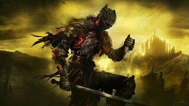
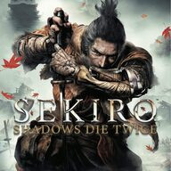
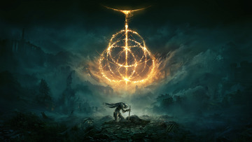

Here are my top 3 favorite video games of all time
| Placement | Game Title |
|---|---|
| 1. |
Dark Souls 3 Dark Souls 3 sets place in a medivel-like world, filled with mystery. The game's lore is not told clearly, instead it is hidden by items. Dark Souls 3 has one of my favorite bsoses of all time, and my favorite sound track of all time. The world building of dark souls 3 is second to none. Every place feels unique and packed with pressence. Not to mention the character lores are some of my favorite. From tragedy to happy endings, Dark Souls 3 makes each npc unique and importnat in your jounrey to reigning the flame |
| 2. |
Sekiro Shadows Die Twice Sekiro Shadows Die Twice takes place in the samuri ages. Our main character, sekiro, aka wolf, is an orphan no the battlefield. He gets trained as a shonibi, tasked to protect his master, who is immortal due to his dragon blood. Sekiro's story is good, but not as good as compared to the other dark souls games. It feels a bit basic and predictable. However sekiro shines most in its combat and boss battles. Sekiro has the best fighting mechanic I have ever seen. THe combat is fast paced, methodical and gets your heart racing. Each strike and damage matters is this game. The combat revolves around parrying your opponenets strike. After parrying enough their posture bar will fill up and you can execute them. The bosses are amazing in this game. From giant snakes to fighting shinobi generals, this game has it all. |
| 3. |
Elden Ring Elden Ring has a similar medivel setting as Dark Souls 3. However it leans more towards fantasy as well. Providing you with knnights but also mythical creatures like lightning dragons. The world building of elden ring is arugalbly the best of any souls game. Every area feels fresh, unique and fits into the story of elden ring so great. It fels like the major areas have a reason of ebing there rather than just filling up space. A reason for this great world building is becasue George R.R Martin, who famously made Game Of Thrones helped Elden Ring's worldbuilding. The story of elden ring is also phenomal. Arugalbly the second best story, second only to dark souls 3 of course. The combat of elden ring is honestly the same as any other souls series except you can now jump and dual weild wepons. I do wish combat was a bit better in thsi game. However something they changed with elden ring is that it is now open world, meaning you can take your own path, the game won't force you to go in a linear direction. This makes each playthrough different. |